Windows
按右鍵選取「TortoiseGit」目錄，點一下「推送」。
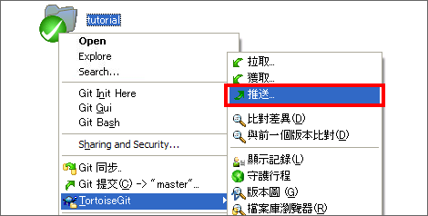
顯示以下畫面後點一下「管理」。
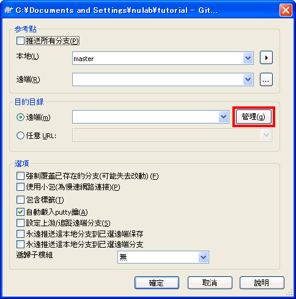
顯示以下畫面後，在遠端中輸入"origin"，「URL」輸入在上一頁建立的遠端數據庫的URL，點一下「增加/保存」。在遠端目錄裡就會增加「origin」，接著點「確定」。
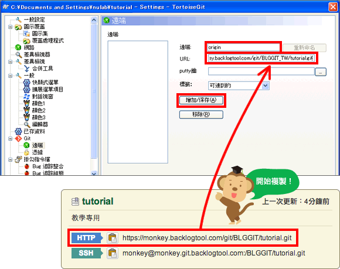
Tips
在主控台，執行push或pull命令時想省略遠端數據庫名稱的話，會使用origin名稱作為遠端數據庫。因此一般都會為遠端數據庫命名為origin。
在push畫面的遠端項目選擇origin，點一下「確認」。
將要求輸入用戶名稱，請輸入貝格樂的用戶名稱。
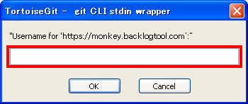
接下來會要求輸入密碼，請輸入貝格樂的密碼。
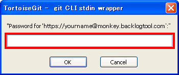
當顯示以下畫面時，就表示push成功了。
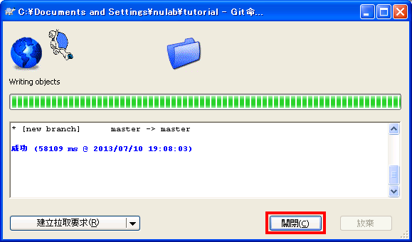
請打開貝格樂的Git頁面，就會看到系統已經增加最近更新的push項目喔。
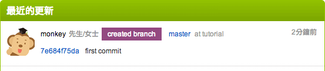
Push的檔案也已添加到遠端數據庫的檔案列表中。
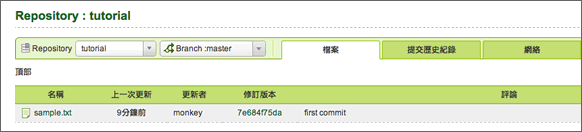
Mac
啟動SourceTree，選擇「tutorial」數據庫。
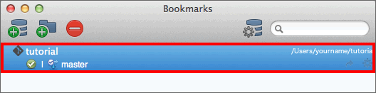
點一下數據庫操作畫面的工具欄右邊的「Settings」。
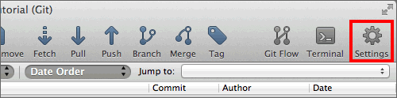
顯示以下畫面後點一下「Add」。
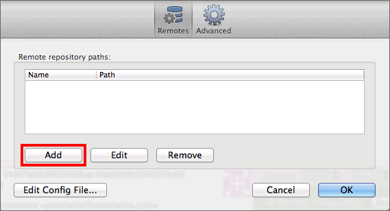
「Remote
name」輸入「origin」，「URL/path」輸入在上一頁建立的遠端數據庫的URL，點一下「OK」。
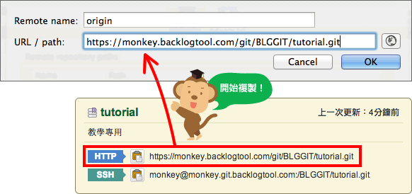
這時會出現認證視窗，請輸入貝格樂的用戶名稱和密碼。
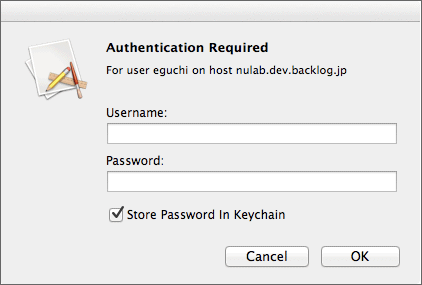
遠端列表裡會增加剛才登錄的「origin」。這樣，就準備好要push到貝格樂的數據庫囉。
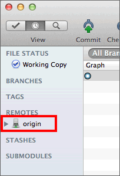
Tips
在主控台，執行push或pull命令時想省略遠端數據庫名稱的話，會使用origin名稱作為遠端數據庫。因此一般都會為遠端數據庫命名為origin。
接著開始push吧。要執行push，請點一下tutorial數據庫操作畫面工具欄的「Push」。
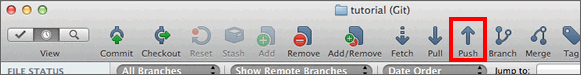
顯示對話窗口後，勾選「master」後點一下「OK」。
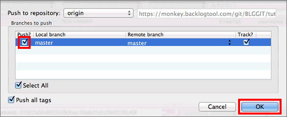
完成push後，在提交的說明裡會增加代表遠端數據庫的
"origin/master"。
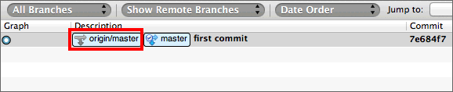
請打開貝格樂的Git頁面，就會看到系統已經增加最近更新的push項目喔。
Push的檔案也已添加到遠端數據庫的檔案列表中。
主控台
您可以為遠端數據庫取個適合的別名或暱稱，這樣以後push的時候就不需要每次都輸入冗長的遠端數據庫的地址了。
在這個教學中，我們將遠端數據庫名稱註冊為"
Orgin"。
首先，請使用remote命令增加一個遠端數據庫。<name>指向遠端數據庫登錄名稱、<url>指向遠端數據庫的URL，請參考以下：
$ git remote add <name> <url>
執行以上命令，使用在上一頁建立的遠端數據庫的URL，並將其命名為origin。
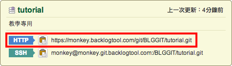
$ git remote add origin https://[your_space_id].backlog.jp/git/[your_project_key]/tutorial.git
Tips
在主控台，執行push或pull命令時想省略遠端數據庫名稱的話，會使用origin名稱作為遠端數據庫。因此一般都會為遠端數據庫命名為origin。
當要push變更到遠端數據庫時，請使用push命令，加上<repository>指定要push的地址，<refspec>指定要push的分支。關於『分支』我們會在進階篇再做更詳細的講解。
$ git push <repository> <refspec>...
執行以下命令將push提交到遠端數據庫origin，在執行提交時指定參數
-u
項目，之後就可省略指定分支名稱。但當push到空白的遠端數據庫時，您就必須指定遠端數據庫和分支的名稱，千萬不能省略。
過程中系統會要求輸入用戶名稱和密碼，請輸入貝格樂的用戶名稱和密碼。
$ git push -u origin master
Username: <用戶名>
Password: <密碼>
Counting objects: 3, done.
Writing objects: 100% (3/3), 245 bytes, done.
Total 3 (delta 0), reused 0 (delta 0)
To https://nulab.backlog.jp/git/BLG/tutorial.git
* [new branch] master -> master
請打開貝格樂的Git頁面，就會看到系統已經增加最近更新的push項目喔。
Push的檔案也已添加到遠端數據庫的檔案列表中。